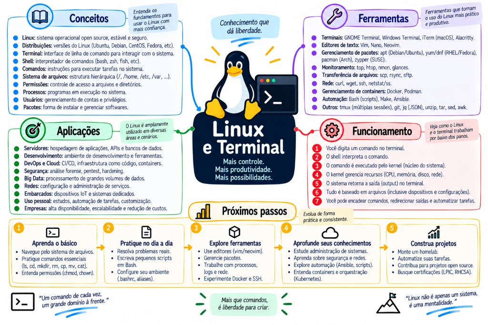

O décimo documento, e o que estava faltando embaixo dos outros. Todo laboratório do acervo roda num container; o Docker e Kubernetes fala em PID 1 e SIGTERM; o System Design manda rodar EXPLAIN ANALYZE pelo psql; a Nuvem exige teardown por comando. Os nove documentos pressupõem o terminal — e nenhum explica. Em cima, a trilha visual: 37 nós em 9 marcos. Embaixo, o conteúdo: 17 tópicos em 9 partes. E a mesma regra do nono: nenhum conceito sem o caso concreto — o container que ignora o Ctrl+C, o disco que encheu sem nenhum arquivo grande, a porta que não responde, o log que sumiu porque foi para o lugar errado.

Mapa Mental Completo: Arquitetura do Linux, Shell, Syscalls, Gerenciamento de Processos, Rede e Produtividade.🔍 Clique para ampliar
Sempre com casoCada tópico abre com o sintoma que você vai encontrar de verdade.
Para quem usa WindowsWSL, container e servidor: onde os três diferem e onde não.
O que muda no containerUma parte inteira sobre por que as ferramentas mentem lá dentro.
Onde a teoria moraLink para o documento que aprofunda, em vez de reexplicar.
↗
A trilha: do prompt ao processo dentro do container
Comece por aqui. Siga o caminho de cima para baixo, clique em qualquer nó para abrir o painel — e use o modo teste para revisar sem reler.
01
O shell: o que acontece antes do programa rodar
Quase todo comportamento estranho do terminal se explica por uma coisa só — a expansão acontece antes de o programa existir.
O shell expande; o programa nunca vê o asterisco
essencial
Direto: quando você aperta Enter, o shell separa a linha em palavras, expande o que precisa ser expandido, e só então chama o programa. O programa recebe a lista já resolvida.
o caso
Um script de limpeza roda há meses. Um dia alguém cria um diretório com espaço no nome, o script apaga a pasta errada, e ninguém entende — o código não mudou.
Mudou o dado. rm -rf $DIR/* com DIR="meus dados" vira rm -rf meus dados/*: dois argumentos. O shell dividiu por espaço antes de o rm existir.
≈
Analogia. O shell é o secretário que lê o bilhete antes de repassar. Se o bilhete diz "traga todas as pastas azuis", ele não repassa essa frase — ele vai, procura, e entrega uma pilha. Quem recebe nunca soube que a palavra "todas" existiu.
A ordem exata
Separação em palavras → expansão de til (~) → expansão de variável ($VAR) → substituição de comando ($(...)) → divisão por espaço → expansão de curinga (*, ?) → remoção de aspas → execução.
O que isso substituiu: nos primeiros sistemas, cada programa implementava a própria expansão de curinga. Centralizar no shell garantiu que * significasse a mesma coisa em toda parte — ao custo de o programa perder a informação de que houve um curinga.
As três formas de citar
Sem aspas: divide por espaço e expande curinga.
Aspas duplas: preserva espaço, ainda expande variável e $(...).
Aspas simples: literal, sem exceção.
A regra prática que evita quase todo bug: aspas duplas em volta de toda variável, salvo quando você quer a divisão de propósito.
antes — sem proteção
#!/bin/bash
DIR=$1
rm -rf $DIR/*
# DIR vazio → rm -rf /*
# DIR com espaco → apaga dois lugares
# nenhum erro, nenhum aviso
depois — o mínimo de um script sério
#!/bin/bash
set -euo pipefail
# -e sai no primeiro erro
# -u variavel nao definida e erro
# -o pipefail falha em qualquer etapa do pipe
DIR="${1:?uso: limpar.sh DIRETORIO}"
[[ -d "$DIR" ]] || { echo "nao e diretorio"; exit 1; }
rm -rf -- "${DIR:?}"/*
O ${DIR:?} merece atenção: ele aborta se a variável estiver vazia. É uma linha que já evitou um número desconhecido de desastres, e custa quatro caracteres.
armadilhas
Variável sem aspas. Funciona até o primeiro nome com espaço, e aí faz algo em outro lugar.
Curinga sem aspas onde o programa deveria recebê-lo.find . -name *.log falha se houver um .log no diretório atual — o shell expande antes.
Esquecer o --. Um arquivo chamado -rf vira opção. O -- encerra as opções.
Confiar no set -e sozinho. Ele não dispara dentro de if, de && nem em pipe sem pipefail.
🧠 RECAPITULANDO O ASSUNTO
Síntese de Fixação: A Mecânica da Expansão do Shell (Globbing)
O Shell Expande Antes da Execução
Quando você digita rm *.log, o executável rm nunca recebe o caractere *. O shell (Bash/Zsh) lê o diretório atual, expande os nomes dos arquivos e passa a lista de strings para o comando: rm a.log b.log c.log.
O Perigo de Aspas Ausentes (Word Splitting)
Sem aspas duplas ("$VAR"), variáveis contendo espaços ou caracteres especiais sofrem expansão e divisão de palavras. Um script com rm -rf $DIR/* com DIR="" vira o fatídico rm -rf /*.
Aspas Simples vs Aspas Duplas
Aspas simples ('...') suprimem toda e qualquer expansão (tratam o texto como literal puro). Aspas duplas ("...") suprimem globbing de arquivos e quebra de espaços, mas preservam interpolação de variáveis ($VAR) e subshells ($(cmd)).
⚠️
Executar 'Argument List Too Long' (E2BIG):
Tentar rodar `rm *` em uma pasta com 500.000 arquivos estoura o limite do kernel Linux para argumentos de linha de comando (`ARG_MAX`). A solução profissional é usar `find . -name '*.log' -delete` ou `xargs`.
💡
Modelo Mental de Decisão Técnica:
Sempre Proteja Variáveis com Aspas Duplas: Em scripts Bash de produção, adote a regra férrea: se tem um cifrão, coloque aspas duplas ("$ARQUIVO"), a menos que você queira deliberadamente a divisão por espaços.
🎮DESAFIO PRÁTICO DE FIXAÇÃO #a1
⭐ +50 XPAguardando resposta
Cenário Prático de Engenharia / Aplicação: Em um script de limpeza em produção, um engenheiro escreveu:
```bash
LOG_DIR="/var/log/minha app/"
rm -rf $LOG_DIR
```
Ao executar, o script tentou deletar `/var/log/minha` e o diretório `app/` no diretório de trabalho atual, além de gerar mensagens de erro de arquivo não encontrado.
Qual falha fundamental do shell causou esse comportamento desastroso?
🃏 FLASHCARD 3D · TOQUE PARA VIRAR
Por que o comando 'rm *.txt' falha com erro 'Argument list too long' quando há centenas de milhares de arquivos no diretório?
Dica: Pense na expansão de argumentos feita pelo Shell e no limite ARG_MAX do Kernel Linux →
✓ RESPOSTA TÉCNICA
Porque o shell expande o asterisco (*) em todos os nomes dos arquivos antes de invocar o programa. Quando a lista resultante ultrapassa o limite de memória do kernel para parâmetros de chamada de sistema (o ARG_MAX do Linux), a syscall execve retorna o erro E2BIG (Argument list too long). Resolve-se utilizando find . -name '*.txt' -delete ou xargs.
← Toque para voltar à pergunta
PATH: onde o shell procura, e por que a versão errada roda
essencial
Direto:command not found quase nunca significa "não está instalado". Significa "não está em nenhum diretório do PATH".
o caso
Você instala o Java 21, confere com java -version e vê 17. Reinstala, reinicia o terminal, continua 17.
O type -a java conta a história: existem dois, e o antigo aparece primeiro no PATH. O shell usa o primeiro que encontra e para de procurar.
≈
Analogia. É uma lista de endereços em ordem. O entregador vai ao primeiro que tem o produto e volta. Não adianta ter o produto melhor no terceiro endereço se o primeiro nunca esvazia.
O PATH é uma variável de ambiente com diretórios separados por dois-pontos. Quando o comando não tem barra no nome, o shell percorre essa lista na ordem. Se tem barra — ./script.sh, /usr/bin/java — ele vai direto, sem consultar o PATH.
A ausência do diretório atual no PATH é deliberada, e é por isso que o ./ existe. Se o diretório atual fosse buscado, entrar numa pasta com um arquivo chamado ls e digitar ls executaria o programa de outra pessoa. O ./ é uma declaração explícita de intenção.
Comando
O que responde
which java
Qual seria executado — só o primeiro.
type -a java
Todos os candidatos, na ordem, incluindo apelido e função do shell.
command -v java
Versão portável do which, a preferida em script.
echo $PATH
A lista inteira, em ordem de prioridade.
hash -r
Limpa o cache de caminhos do bash — resolve o caso em que você moveu o binário e o shell insiste no antigo.
Apelido e função têm prioridade sobre o PATH. É por isso que type -a importa mais que which: se alguém definiu alias ls='ls --color', o which ls mostra o binário, mas o que roda é o apelido. Num script, isso é uma fonte de diferença entre "funciona no meu terminal" e "falha no cron".
armadilhas
Editar o PATH no arquivo errado..bashrc vale para shell interativo; .profile para login. O cron não lê nenhum dos dois — ele roda com um PATH mínimo, e é por isso que o script que funciona no terminal falha às três da manhã.
Acrescentar no fim esperando prioridade. Para que o novo ganhe, ele precisa vir antes: PATH="/novo:$PATH".
Perder o PATH inteiro.PATH=/meu/bin sem o :$PATH deixa o terminal sem quase nenhum comando.
🧠 RECAPITULANDO O ASSUNTO
Síntese de Fixação: A Variável PATH e a Resolução de Binários
Como o Shell Localiza Executáveis
Ao digitar um comando sem barra (ex: java), o shell varre ordenadamente da esquerda para a direita os diretórios listados na variável $PATH (separados por :) e executa a primeira ocorrência encontrada com permissão de execução.
Diagnóstico com 'which' vs 'type -a'
which java mostra apenas a primeira ocorrência. O comando nativo do bash type -a java revela todas as ocorrências no PATH, além de indicar se o comando é um alias, uma função do shell ou um binário físico.
O Perigo do '.' (Diretório Atual) no PATH
Colocar . (diretório atual) no início do PATH é uma vulnerabilidade de segurança gravíssima (CWE-426): permite que um atacante coloque um script malicioso chamado ls em uma pasta pública e você o execute como root.
⚠️
Versão Incorreta do Java ou Node em Produção:
Instalar uma versão nova do Java em `/usr/local/bin` e esquecer que `/usr/bin/java` aponta para uma versão antiga faz o sistema continuar executando a versão legada se `/usr/bin` vier antes no PATH.
💡
Modelo Mental de Decisão Técnica:
Precedência da Esquerda para a Direita: O primeiro diretório que tiver o binário vence. Se você quer priorizar binários de usuário ou SDKMAN/asdf, coloque-os no início da string do PATH.
🎮DESAFIO PRÁTICO DE FIXAÇÃO #a2
⭐ +50 XPAguardando resposta
Cenário Prático de Engenharia / Aplicação: Um desenvolvedor instalou o OpenJDK 21 via arquivo tar.gz descompactado em `/opt/jdk-21/bin`. Ele adicionou ao final do `~/.bashrc`: `export PATH=$PATH:/opt/jdk-21/bin`. Porém, ao rodar `java -version`, o terminal continua exibindo `openjdk version 17.0.2` localizado em `/usr/bin/java`.
Por que o Java 17 continua sendo executado e como corrigir?
🃏 FLASHCARD 3D · TOQUE PARA VIRAR
Qual a diferença entre os comandos 'which java' e 'type -a java' no diagnóstico de binários no Linux?
Dica: Pense na visibilidade de aliases, funções do shell e versões duplicadas no PATH →
✓ RESPOSTA TÉCNICA
which apenas varre os diretórios do PATH e retorna o primeiro arquivo executável que encontrar. type -a é um comando interno (builtin) do shell que mostra todas as ocorrências no PATH, além de detectar se o comando é um alias, uma função em memória do shell ou um binário do sistema, evitando falsos diagnósticos.
← Toque para voltar à pergunta
02
Tudo é arquivo — e permissão é número
A frase é repetida sem explicação. Ela significa que a mesma interface — abrir, ler, escrever, fechar — serve para arquivo, disco, terminal, socket e processo.
Permissões: rwx, o octal e o x que significa outra coisa
essencial
Direto: r=4, w=2, x=1. Some e você tem o octal. E em diretório o x não é executar: é atravessar.
≈
Analogia. Num prédio: r no andar é poder ler a lista de moradores; x no andar é poder passar pelo corredor. Sem r mas com x, você chega no apartamento 302 se souber o número — só não consegue descobrir quais existem. Sem x, o corredor está trancado e a lista não adianta.
Essa distinção resolve a confusão mais comum da parte: um diretório com r e sem x permite ls mas não permite entrar nem ler nada lá dentro. Um diretório com x e sem r permite abrir /dados/relatorio.pdf se você souber o nome, mas o ls falha. E é assim que se cria um diretório de "só quem sabe o caminho".
Octal
Significa
Uso típico
644
dono lê e escreve, resto só lê
arquivo comum
755
dono tudo, resto lê e executa
script e diretório
600
só o dono
chave privada, .env
640
dono escreve, grupo lê
config com segredo compartilhado no time
777
todo mundo tudo
nunca — é abrir escrita para qualquer processo
O SSH recusa chave com permissão folgada, e isso confunde muita gente na primeira vez. Se ~/.ssh/id_rsa estiver 644, o cliente se recusa a usar e a mensagem não é óbvia. O correto é 600 — e o mesmo vale para o diretório ~/.ssh, que precisa ser 700.
armadilhas
chmod 777 como solução. Resolve o sintoma e abre o sistema. Quase sempre o problema real é o dono, não a permissão.
chmod -R em árvore mista.chmod -R 755 torna executável todo arquivo de dados. Use find -type d e -type f separados.
Esquecer o umask. Ele mascara a permissão de arquivos novos. Se algo nasce com permissão diferente da esperada, o umask é o suspeito.
# o par correto para arvore mista
find /app -type d -exec chmod 755 {} \;
find /app -type f -exec chmod 644 {} \;
umask # mostra a mascara atual (022 e o comum)
# 022 significa: tire w do grupo e dos outros
🧠 RECAPITULANDO O ASSUNTO
Síntese de Fixação: Permissões de Arquivos — O Octal e o Significado do 'x'
As Três Tríades: User, Group, Others
A máscara rwxr-xr-- decompõe-se em: Dono (rwx = 7), Grupo (r-x = 5) e Outros (r-- = 4). R=4 (Read), W=2 (Write) e X=1 (Execute).
O 'x' em Diretórios Significa Travessia (Traverse)
Em um arquivo comum, 'x' permite rodar o binário/script. Em um diretório, 'x' significa permissão de entrar na pasta (cd) e acessar metadados dos arquivos internos. Sem 'x', mesmo tendo 'r', você não consegue ler arquivos dentro da pasta!
O Flagelo do 'chmod 777'
Dar `chmod 777` em desespero concede permissão total de escrita e execução para qualquer usuário do sistema (incluindo invasores e processos de containers compartilhados). É uma violação grave de conformidade e segurança.
⚠️
Dar 'chmod -R 777' na Raiz do Projeto:
Destrói as permissões de segurança de chaves SSH (`.ssh/id_rsa` exige 600; se tiver 777, o cliente SSH rejeita a chave por ser 'too open'), além de transformar arquivos de texto em executáveis inúteis.
💡
Modelo Mental de Decisão Técnica:
Menor Privilégio Semanal: Arquivos de texto e código fonte devem ser 644 (rw-r--r--); diretórios devem ser 755 (rwxr-xr-x); chaves privadas e arquivos com senhas devem ser 600 (rw-------).
🎮DESAFIO PRÁTICO DE FIXAÇÃO #b1
⭐ +50 XPAguardando resposta
Cenário Prático de Engenharia / Aplicação: Um desenvolvedor concedeu permissão `chmod 644` a um diretório chamado `/dados/projetos/`. Ao tentar executar `cd /dados/projetos/` com um usuário comum, o terminal retorna o erro: `bash: cd: /dados/projetos/: Permission denied`. No entanto, ao rodar `ls -ld /dados/projetos/`, ele confirma que a permissão de leitura está ativa (`dr--r--r--`).
Por que o usuário não consegue entrar na pasta se ela tem permissão de leitura (r)?
🃏 FLASHCARD 3D · TOQUE PARA VIRAR
O que significa a permissão de execução ('x') em um arquivo comum versus em um diretório no Linux?
Dica: Pense na diferença entre rodar um binário compilado e abrir a porta de um diretório com 'cd' →
✓ RESPOSTA TÉCNICA
Em um arquivo, o x permite carregar e executar o arquivo na memória como um processo. Em um diretório, o x confere o direito de atravessar (traverse) a pasta: permite executar cd para entrar no diretório e acessar os inodes dos arquivos localizados no seu interior.
← Toque para voltar à pergunta
UID, GID e o volume que o container não escreve
containercaso real
Direto: o kernel compara números, não nomes. O nome de usuário é uma tradução feita por quem está olhando — e host e container têm tabelas diferentes.
o caso
Você monta ./dados no container. No host, ls -l mostra você como dono e tudo parece certo. Dentro do container, a aplicação recebe permission denied ao gravar.
O id no host diz uid=1000. O id dentro do container diz uid=1001. Para o kernel, são pessoas diferentes — e o diretório pertence à primeira.
≈
Analogia. Dois prédios usam o mesmo sistema de crachá numerado, mas listas de nomes diferentes. O crachá 1000 abre a sala; você tem o crachá 1001 e o seu nome também é "Thallys" na lista do seu prédio. A porta não lê nomes.
As três saídas
Alinhar o UID na imagem:useradd -u 1000 no Dockerfile. É a mais limpa.
Passar o seu UID na execução:-u "$(id -u):$(id -g)". Boa para desenvolvimento.
Ajustar o dono do diretório montado no host. Funciona, mas espalha a responsabilidade.
A saída errada
Rodar o container como root. Resolve na hora e cria dois problemas: o processo passa a ter privilégio que não precisa, e os arquivos que ele criar no volume ficam pertencendo ao root no host também — e aí você não consegue apagá-los sem sudo.
É exatamente o que o critério de aceite do projeto A03 proíbe: "imagem roda sem root e sem segredo embutido".
# diagnostico, nos dois lados
id # no host
docker run --rm -it minha-app id # dentro
# Dockerfile com UID fixo
RUN useradd -u 1000 -m app
USER app
# ou, para desenvolvimento, empreste o seu
docker run --rm -u "$(id -u):$(id -g)" \
-v "$PWD/dados:/app/dados" minha-app
onde a teoria moraO ciclo de vida da imagem, o usuário não-root e o empacotamento estão em Docker e Kubernetes completo. Identidade da workload na nuvem, em Nuvem completo. Aqui é só o mecanismo do kernel por baixo dos dois.
🧠 RECAPITULANDO O ASSUNTO
Síntese de Fixação: UID, GID e o Volume que o Container Não Consegue Escrever
O Kernel Não Conhece Nomes de Usuários
O Linux só enxerga números inteiros (UID e GID). O mapeamento de 'root' para 0 e 'appuser' para 1000 existe apenas no arquivo /etc/passwd local.
Mapeamento Direto em Volumes Montados
Quando um container Docker roda como usuário node (UID 1000) e monta um volume da máquina host (-v /meu/diretorio:/app), o kernel valida as permissões contra o UID 1000 da máquina hospedeira.
O Clássico Erro 'EACCES: permission denied'
Se a pasta no host pertence ao root (UID 0) com permissão 755 e o container roda com UID não-root (ex: 1001), a aplicação falha instantaneamente ao tentar gravar logs ou uploads no volume.
⚠️
Executar Containers como Root para Resolver Permissões:
Remover a diretiva `USER` do Dockerfile e rodar como root (UID 0) para contornar erros de permissão de volume cria um risco crítico de Container Breakout e escalada de privilégios no nó do cluster.
💡
Modelo Mental de Decisão Técnica:
Sincronize os IDs Numéricos: Em desenvolvimento, garanta que o UID do usuário dentro do container seja idêntico ao UID do seu usuário no host (`id -u`). Em produção, utilize `chown -R 1001:1001` no diretório do volume ou use `fsGroup` no Kubernetes.
🎮DESAFIO PRÁTICO DE FIXAÇÃO #b2
⭐ +50 XPAguardando resposta
Cenário Prático de Engenharia / Aplicação: Você fez o build de uma imagem Docker segura que utiliza `USER 10001`. Ao rodar o container no Kubernetes montando um PersistentVolumeClaim (PVC) em `/data`, a aplicação quebra na inicialização com: `java.io.FileNotFoundException: /data/app.log (Permission denied)`. Ao inspecionar o volume no nó, o diretório possui proprietário `root:root` (UID 0) com permissão `755`.
Qual a solução correta no Kubernetes sem comprometer a segurança da imagem?
🃏 FLASHCARD 3D · TOQUE PARA VIRAR
Por que um container com usuário não-root recebe erro 'Permission Denied' ao tentar escrever em um volume do host recém-criado?
Dica: Pense em quem é o dono padrão do diretório criado pelo Docker no host e qual UID a app possui →
✓ RESPOSTA TÉCNICA
Porque diretórios criados automaticamente pelo Docker daemon no host pertencem ao UID 0 (root) com permissão restrita de escrita. Como o container executa com um UID não-root (ex: 1000 ou 10001), o kernel do Linux bloqueia a operação de escrita por falta de permissão de dono ou grupo.
← Toque para voltar à pergunta
03
Processos e sinais: o deploy que corta pela metade
A parte que o Docker e Kubernetes completo pressupõe e não explica — e que decide se o seu deploy é limpo.
SIGTERM pede, SIGKILL arranca
essencial
Direto: SIGTERM é um pedido que a aplicação pode tratar. SIGKILL não chega à aplicação — o kernel a remove. Nada é gravado, nenhuma conexão é devolvida.
o caso
Toda vez que sobe uma versão, alguns usuários veem erro por alguns segundos e o banco acumula conexões órfãs. O time culpa o pool.
O culpado é outro: a aplicação não trata SIGTERM. O orquestrador pede educadamente, ninguém escuta, e trinta segundos depois vem o SIGKILL — que corta as requisições em andamento no meio e não devolve nada.
≈
Analogia. SIGTERM é o aviso de que a loja vai fechar: você para de deixar gente nova entrar, atende quem está na fila, fecha o caixa e apaga a luz. SIGKILL é o disjuntor geral sendo desligado de fora — no meio de uma venda, com a gaveta aberta.
Como funciona por dentro
O sinal é uma notificação assíncrona entregue pelo kernel. O processo registra um handler e o kernel o invoca. Dois sinais não aceitam handler, por decisão de projeto: SIGKILL e SIGSTOP — porque o sistema precisa de uma forma de encerrar qualquer processo, inclusive um travado ou malicioso.
O que veio substituir: antes de haver sinais padronizados, cada programa inventava o próprio protocolo de encerramento — arquivo de controle, porta, marca no disco. O sinal deu ao sistema operacional uma linguagem única.
Os que aparecem no seu dia
SIGTERM (15) — o padrão do kill, e o que o orquestrador manda.
SIGINT (2) — o seu Ctrl+C.
SIGKILL (9) — o último recurso.
SIGHUP (1) — o terminal fechou; muitos serviços o reaproveitam como "releia a configuração".
SIGSTOP / SIGCONT — o Ctrl+Z e o fg.
antes — nada tratado
#!/bin/bash
tmp=$(mktemp)
processa > "$tmp"
mv "$tmp" /destino/saida.txt
# Ctrl+C ou TERM no meio:
# o arquivo temporario fica para sempre em /tmp
# e ninguem sabe que ele existe
depois — com limpeza garantida
#!/bin/bash
set -euo pipefail
tmp=$(mktemp)
trap 'rm -f "$tmp"' EXIT INT TERM
processa > "$tmp"
mv "$tmp" /destino/saida.txt
# EXIT cobre saida normal E os sinais tratados
# o arquivo some em qualquer caminho de saida
Os códigos de saída falam.128 + número do sinal. Um container que sai com 137 morreu de SIGKILL (128+9) — quase sempre OOM ou grace period estourado. Com 143, morreu de SIGTERM (128+15) — encerramento normal. Saber ler esses dois números economiza a busca por uma exceção que não existe no log.
armadilhas
kill -9 por reflexo. Ele garante que nada seja salvo. Tente TERM primeiro, sempre.
Processo em estado D. Nem o KILL resolve: ele está em I/O ininterrompível, esperando o disco ou a rede. O alvo é a causa do I/O.
Handler que faz muita coisa. O tempo é limitado pelo grace period. Feche conexões e saia; não tente processar a fila inteira.
Ctrl+C que não mata o filho. O SIGINT vai para o grupo em primeiro plano; um processo em segundo plano não recebe.
🧠 RECAPITULANDO O ASSUNTO
Síntese de Fixação: Sinais POSIX — SIGTERM Pede, SIGKILL Arranca
SIGTERM (Sinal 15) — O Encerramento Gracioso
Notifica o processo de que ele deve fechar. Pode ser interceptado e tratado pela aplicação para: fechar conexões de banco de dados, terminar de processar requisições em voo e commitar transações pendentes.
SIGKILL (Sinal 9) — O Extermínio Forçado pelo Kernel
Não pode ser interceptado, tratado nem ignorado pelo processo. O kernel Linux desaloca sumariamente a memória e fecha os file descriptors do processo sem qualquer aviso.
SIGINT (Sinal 2) e SIGQUIT (Sinal 3)
SIGINT é disparado pelo teclado via Ctrl + C (interrupção graciosa). SIGQUIT é disparado via Ctrl + \ e força a geração de um core dump para diagnóstico.
⚠️
Executar 'kill -9' como Primeiro Recurso:
Disparar `kill -9` sem antes tentar `kill -15` (SIGTERM) corrompe arquivos de dados abertos, deixa locks de tabela órfãos no banco e interrompe requisições de pagamentos no meio.
💡
Modelo Mental de Decisão Técnica:
Educação Primeiro, Força Bruta por Último: Envie SIGTERM e dê um tempo razoável (ex: 10 a 30 segundos de Grace Period) para o processo se despedir. Se ele travar em loop infinito, envie o SIGKILL.
🎮DESAFIO PRÁTICO DE FIXAÇÃO #c1
⭐ +50 XPAguardando resposta
Cenário Prático de Engenharia / Aplicação: Ao realizar o deploy de uma nova versão no Kubernetes, um Pod do serviço de faturamento é terminado. O Kubernetes envia um SIGTERM. A aplicação leva 12 segundos para drenar as transações abertas e se desconectar do PostgreSQL. No entanto, o `terminationGracePeriodSeconds` do Pod spec estava configurado com o valor padrão de 10 segundos.
O que o Kubernetes fará no 10º segundo e qual a consequência técnica?
🃏 FLASHCARD 3D · TOQUE PARA VIRAR
Qual a diferença operacional e de segurança entre os sinais SIGTERM (15) e SIGKILL (9) no Linux?
Dica: Pense na capacidade do processo de capturar o sinal para rodar Shutdown Hooks →
✓ RESPOSTA TÉCNICA
O SIGTERM (15) é um sinal cooperativo que o processo pode interceptar para executar rotinas de encerramento gracioso (Graceful Shutdown), como fechar pools e finalizar requisições. O SIGKILL (9) é executado diretamente pelo Kernel do Linux: não pode ser interceptado nem tratado, matando o processo instantaneamente com risco de corrupção de estado.
← Toque para voltar à pergunta
PID 1: onde o sinal se perde
essencialcontainer
Direto: o PID 1 tem tratamento especial do kernel — sinais sem handler explícito são ignorados. E no container, o PID 1 é o seu entrypoint.
o caso
docker stop demora exatos 10 segundos, sempre. Localmente ninguém nota; em produção, cada rollout de vinte pods acumula minutos de espera e termina em morte suja.
A causa está numa linha do Dockerfile: CMD java -jar app.jar. Nessa forma, o Docker executa /bin/sh -c "java -jar app.jar". O sh vira o PID 1, a JVM vira um filho — e o sh não repassa o sinal.
≈
Analogia. Você liga para o escritório pedindo para avisarem o gerente. A recepcionista atende, anota — e não avisa. Do lado de fora, parece que o gerente ignorou; ele nunca soube.
Existem duas formas de escrever CMD e ENTRYPOINT, e a diferença entre elas é exatamente esta. Na forma exec (lista JSON), o Docker executa o binário diretamente: a sua aplicação é o PID 1 e recebe o sinal. Na forma shell (string), há um shell no meio.
# ERRADO: forma shell — o sh vira PID 1
CMD java -jar app.jar
# CERTO: forma exec — a JVM e o PID 1
CMD ["java","-jar","app.jar"]
# quando voce PRECISA de shell (expandir variavel, encadear),
# passe a bola com exec: o shell e SUBSTITUIDO pela JVM
CMD ["sh","-c","exec java $JAVA_OPTS -jar app.jar"]
O exec no terceiro caso é o detalhe que resolve: em vez de criar um processo filho, ele substitui o processo atual. O shell deixa de existir, a JVM herda o PID 1, e o sinal chega.
Há ainda o problema dos zumbis: como o PID 1 também é o adotador de processos órfãos, ele deveria recolher os códigos de saída. Aplicações comuns não fazem isso. Se o seu container cria subprocessos, use --init (que insere um init mínimo como PID 1) ou tini.
onde a teoria moraO grace period, o preStop, o rollout e o comportamento do pod estão em Docker e Kubernetes completo. O graceful shutdown do Spring Boot — o que ele fecha e em que ordem — está em Spring completo. Este tópico é o mecanismo do kernel embaixo dos dois.
armadilhas
Testar só localmente com Ctrl+C. Você fecha o terminal e não percebe. O sintoma aparece no deploy.
Script de entrypoint sem exec na última linha. O mesmo problema, escondido num arquivo .sh.
Aumentar o grace period para "resolver". Você só aumentou a espera; ninguém está escutando do outro lado.
🧠 RECAPITULANDO O ASSUNTO
Síntese de Fixação: O Problema do PID 1 em Containers e Sinais Perdidos
O Papel Especial do PID 1 (Init System)
No Linux tradicional, o PID 1 (systemd/init) possui duas funções vitais: adotar e recolher processos órfãos (evitando processos zumbis) e gerenciar o repasse de sinais do sistema.
Containers Não Têm Init por Padrão
Em um container Docker, a aplicação que roda na instrução ENTRYPOINT assume o PID 1. Se sua aplicação não for desenhada para ser um processo Init, ela ignora sinais como SIGTERM por padrão do kernel!
O Erro Fatal: Shell Form vs Exec Form
Escrever ENTRYPOINT java -jar app.jar (Shell Form) faz o `/bin/sh` assumir o PID 1. O shell não repassa SIGTERM para o processo Java filho! Use sempre o Exec Form (JSON Array): ENTRYPOINT ["java", "-jar", "app.jar"].
⚠️
Containers Demoram Exatamente 10s para Parar com 'docker stop':
Se ao rodar `docker stop` seu container sempre congela por 10 segundos antes de morrer, é batata: seu processo não está recebendo o SIGTERM devido a PID 1 mal configurado e está sendo morto com SIGKILL após o timeout.
💡
Modelo Mental de Decisão Técnica:
Use Exec Form ou Init Leve (Tini / dumb-init): Se sua aplicação precisa disparar scripts bash intermediários, utilize o tini (`docker run --init`) como PID 1 para garantir repasse perfeito de sinais e colheita de zumbis.
🎮DESAFIO PRÁTICO DE FIXAÇÃO #c2
⭐ +50 XPAguardando resposta
Cenário Prático de Engenharia / Aplicação: Um desenvolvedor escreveu o seguinte Dockerfile:
```dockerfile
FROM eclipse-temurin:21-jre
COPY target/app.jar /app.jar
CMD java -jar /app.jar
```
Ao executar `docker stop` nesse container, o comando trava por exatamente 10 segundos antes de finalizar. Nos logs, nenhuma mensagem do `@PreDestroy` do Spring Boot foi impressa.
Por que a aplicação não executou o shutdown gracioso?
🃏 FLASHCARD 3D · TOQUE PARA VIRAR
Por que a sintaxe Exec Form (JSON array) é mandatória no ENTRYPOINT/CMD de Dockerfiles para microsserviços?
Dica: Pense na criação de um subprocesso intermediário /bin/sh que engole sinais do sistema operacional →
✓ RESPOSTA TÉCNICA
Porque a sintaxe Shell Form (CMD comando) executa o processo como filho de um shell (/bin/sh -c), e o shell não repassa sinais POSIX (como SIGTERM) para os processos filhos. A sintaxe Exec Form (CMD ["binario", "arg"]) executa o programa diretamente como PID 1, garantindo o recebimento direto de sinais e o shutdown gracioso imediato.
← Toque para voltar à pergunta
04
Os três descritores e a composição
Entender 0, 1 e 2 transforma o terminal de lista de comandos decorados em ferramenta que você combina.
stdout, stderr e a ordem do 2>&1
essencial
Direto:> redireciona só o descritor 1. O erro continua na tela porque ele é o descritor 2 — e a separação é proposital.
o caso
Uma tarefa do cron grava em log há meses. Um dia ela falha em silêncio: o log só tem o começo, e nada explica. O crontab dizia /script.sh >> /var/log/s.log.
Só o stdout estava sendo gravado. Toda mensagem de erro ia para o stderr, que o cron tenta mandar por e-mail — e num servidor sem e-mail configurado, evapora.
≈
Analogia. Uma esteira de produção e um alto-falante de aviso. A esteira (stdout) alimenta a próxima máquina; o alto-falante (stderr) fala com a pessoa. Misturar os dois entope a esteira com recados; ignorar o alto-falante é não saber que a máquina parou.
A separação existe justamente para que o dado possa ser canalizado enquanto o diagnóstico continua visível. É por isso que cmd | grep x não filtra as mensagens de erro: elas nunca entraram no pipe.
E então vem a pegadinha clássica. 2>&1 significa "mande o descritor 2 para onde o descritor 1 está agora". A ordem decide o resultado:
errado — o erro fica na tela
cmd 2>&1 > saida.txt
# 1. o 2 aponta para onde o 1 esta: o TERMINAL
# 2. o 1 muda para o arquivo
# resultado: saida no arquivo, erro na tela
certo — os dois no arquivo
cmd > saida.txt 2>&1
# 1. o 1 muda para o arquivo
# 2. o 2 aponta para onde o 1 esta: o ARQUIVO
# resultado: tudo no arquivo
Forma
Efeito
cmd > f
Sobrescreve f com o stdout.
cmd >> f
Acrescenta ao fim.
cmd 2> f
Só o erro.
cmd > f 2>&1
Os dois no mesmo arquivo. A ordem importa.
cmd &> f
Atalho do bash para o anterior.
cmd 2>/dev/null
Descarta o erro — use com consciência.
cmd < entrada.txt
Alimenta o stdin a partir de um arquivo.
armadilhas
Cron sem 2>&1. O erro some e a tarefa falha em silêncio. É o caso acima, e é frequente.
2>/dev/null para "limpar a saída". Você acabou de desligar o alarme.
cmd > f com o próprio f como entrada. O shell trunca o arquivo antes de o comando rodar. sort f > f esvazia o arquivo.
🧠 RECAPITULANDO O ASSUNTO
Síntese de Fixação: Os Três Streams Padrão e a Ordem do '2>&1'
Os Três File Descriptors Fundamentais
0 = stdin (entrada padrão de teclado/pipe); 1 = stdout (saída padrão de dados normais); 2 = stderr (saída de erros e diagnósticos).
A Mecânica do Redirecionamento 2>&1
O operador > arquivo.log redireciona o stdout (1). Em seguida, 2>&1 diz ao shell: 'faça o descritor 2 (stderr) apontar para o mesmo destino para onde o descritor 1 está apontando agora'.
A Ordem dos Fatores Importa Radicalmente
cmd > log.txt 2>&1 funciona perfeitamente (ambos vão para o arquivo). Mas cmd 2>&1 > log.txtnão funciona como esperado: faz o stderr apontar para o terminal onde o stdout estava originalmente, e só depois joga o stdout no arquivo!
⚠️
Engolir Erros Enviando para /dev/null:
Executar scripts em cron com `cmd > /dev/null 2>&1` joga todo e qualquer erro no 'buraco negro' do Linux. Se o script quebrar silenciosamente por semanas, você só descobrirá quando o estrago estiver feito.
💡
Modelo Mental de Decisão Técnica:
Sintaxe Moderna do Bash (Bash 4+): Você pode simplificar `cmd > log.txt 2>&1` utilizando o operador combinado cmd &> log.txt, muito mais legível e menos suscetível a erros de ordenação.
🎮DESAFIO PRÁTICO DE FIXAÇÃO #d1
⭐ +50 XPAguardando resposta
Cenário Prático de Engenharia / Aplicação: Em um script de automação, um engenheiro precisa rodar um utilitário de migração de banco e gravar tanto as mensagens normais de log quanto os eventuais erros em um único arquivo `migracao.log`. Ele escreveu no script:
```bash
./migrar-banco.sh 2>&1 > migracao.log
```
Ao testar, os erros de conexão continuaram aparecendo no terminal em vez de serem gravados no arquivo.
Por que a sintaxe falhou e como corrigir?
🃏 FLASHCARD 3D · TOQUE PARA VIRAR
Por que a ordem dos argumentos em 'comando > log.txt 2>&1' não pode ser invertida para 'comando 2>&1 > log.txt'?
Dica: Pense na avaliação da esquerda para a direita dos ponteiros de file descriptors do kernel →
✓ RESPOSTA TÉCNICA
O shell avalia os redirecionamentos estritamente da esquerda para a direita. Ao executar 2>&1 > log.txt, o descritor 2 é apontado para onde o descritor 1 aponta no momento presente (o terminal), e só depois o descritor 1 é redirecionado para o arquivo. Para ambos irem para o arquivo, deve-se primeiro redirecionar o 1 e depois igualar o 2 com > log.txt 2>&1.
← Toque para voltar à pergunta
Pipes: por que existem programas tão pequenos
a filosofia
Direto: o pipe liga a saída de um programa à entrada do próximo, em memória. Os dois rodam ao mesmo tempo — não um depois do outro.
≈
Analogia. Uma linha de montagem, não uma fila de espera. A segunda estação já está trabalhando na primeira peça enquanto a primeira estação produz a segunda. Se a segunda parar, a primeira acumula até travar — que é exatamente o que acontece quando o buffer do pipe enche.
De onde veio
O pipe foi acrescentado ao Unix em 1973, por Doug McIlroy, e reorganizou a forma de escrever software: em vez de programas grandes com muitas opções, programas pequenos que fazem uma coisa e falam texto.
O que veio substituir: arquivos temporários. Antes, encadear era gravar em /tmp e ler de volta — mais lento, com limpeza manual, e sem paralelismo. O pipe é um buffer no kernel, sem tocar o disco.
O que isso permite
Você resolve, numa linha, um problema que ninguém programou. A pergunta "quais os 10 IPs que mais bateram na API hoje" não tem programa dedicado — e mesmo assim é resolvida em segundos:
Vale desmontar essa linha, porque ela contém três ideias. O awk recorta a coluna. O sort agrupa as iguais — necessário porque o uniq só junta linhas adjacentes. O uniq -c conta. O segundo sort -rn ordena por esse contador, numericamente e do maior para o menor. O head corta.
O código de saída de um pipe é o do último comando. Isso significa que gera_dados | processa retorna sucesso mesmo se gera_dados falhar — e o script segue adiante com dados vazios. O set -o pipefail corrige: o pipe passa a falhar se qualquer etapa falhar. É a terceira letra do set -euo pipefail.
armadilhas
uniq sem sort antes. Ele só junta adjacentes. Sem ordenar, você conclui que não havia duplicata.
Esperar que o erro entre no pipe. Só o stdout entra. Para incluir o erro: cmd 2>&1 | ....
cat arquivo | grep x. Funciona, mas o grep abre arquivo sozinho: grep x arquivo. Um processo a menos.
Pipe com comando interativo no meio. Programas que detectam se a saída é um terminal mudam de comportamento — é por isso que a cor some quando você canaliza.
🧠 RECAPITULANDO O ASSUNTO
Síntese de Fixação: Pipes (|) e a Filosofia Unix de Programas Pequenos
A Filosofia Unix (Doug McIlroy)
'Faça programas que façam uma única coisa e façam bem. Escreva programas que trabalhem juntos. Escreva programas que manipulem fluxos de texto, pois essa é a interface universal'.
Comunicação em Memória sem Arquivo Intermediário
O operador pipe (|) conecta o stdout de um processo diretamente ao stdin do processo seguinte através de um buffer em memória circular (pipe buffer do kernel, ~64KB), com concorrência paralela nativa.
O Sinal SIGPIPE
Se o leitor do pipe fechar a entrada (ex: head -n 5 fecha após ler 5 linhas), o kernel Linux envia o sinal SIGPIPE (sinal 13) para o escritor anterior para que ele pare de trabalhar imediatamente.
⚠️
Uso Inútil de 'cat' (Useless Use of Cat - UUOC):
Escrever `cat arquivo.log | grep erro` é redundante e cria um processo desnecessário na tabela do SO. Prefira passar o arquivo direto para o comando: `grep erro arquivo.log`.
💡
Modelo Mental de Decisão Técnica:
Esteira de Montagem em Streaming: O segundo comando não espera o primeiro comando terminar de processar o arquivo de 10GB inteiro; eles trabalham simultaneamente linha a linha consumindo memória quase zero.
🎮DESAFIO PRÁTICO DE FIXAÇÃO #d2
⭐ +50 XPAguardando resposta
Cenário Prático de Engenharia / Aplicação: Você tem um arquivo de log de 20GB no servidor e precisa extrair os 10 primeiros IPs únicos que tentaram acessar a rota `/admin`. O servidor tem apenas 2GB de memória RAM disponível.
Qual pipeline de comandos processa os dados em streaming com baixíssimo consumo de memória?
🃏 FLASHCARD 3D · TOQUE PARA VIRAR
Como o kernel Linux gerencia a execução de comandos encadeados por pipe (ex: cmd1 | cmd2) em termos de concorrência e memória?
Dica: Pense se cmd2 espera cmd1 terminar tudo ou se ambos rodam em paralelo via buffer →
✓ RESPOSTA TÉCNICA
O kernel inicia ambos os processos simultaneamente e em paralelo. A comunicação ocorre através de um buffer circular na memória RAM do kernel (geralmente 64KB): se o buffer encher, cmd1 é pausado aguardando cmd2 consumir; se o buffer esvaziar, cmd2 aguarda novos dados, garantindo consumo de memória estritamente constante e previsível.
← Toque para voltar à pergunta
05
grep, sed e awk: o trio que resolve
Três ferramentas, três propósitos distintos. A confusão entre elas é a causa de linhas de comando ilegíveis.
Qual dos três, e quando
essencial
Direto:grep escolhe linhas. sed transforma linhas. awk trabalha com colunas e agrega. Quando você usa o errado, a linha fica ilegível.
≈
Analogia. Numa pilha de papéis: o grep separa as folhas que interessam; o sed passa corretivo e reescreve trechos; o awk lê as colunas de cada folha e faz a soma no fim. Dá para somar com o sed? Dá. Fica horrível.
Pergunta
Ferramenta
Exemplo
Quais linhas contêm X?
grep
grep -i erro app.log
Trocar X por Y em todo lugar
sed
sed -i.bak 's/8080/9090/g' conf
Somar a terceira coluna
awk
awk '{s+=$3} END{print s}'
Contar ocorrências por valor
awk + sort
awk '{c[$1]++} END{...}'
Mostrar contexto em volta do erro
grep
grep -C 3 Exception app.log
grep — quatro flags rendem quase tudo. -i ignora caixa. -v inverte, e é como se remove o ruído do DEBUG. -r percorre diretórios. E -C 3, a mais subestimada: três linhas de contexto em volta. Num stack trace, a linha que casa raramente é a que explica.
sed — a forma é s/procura/troca/g. O separador não precisa ser barra: com caminhos, use | e evite a cerca de escapes. A flag -i altera o arquivo no lugar, e sempre deve vir com sufixo de backup: -i.bak. Não existe desfazer.
awk — $1 é a primeira coluna, $NF a última, NR o número da linha. Os blocos BEGIN e END rodam uma vez cada, e é no END que a agregação é impressa. Ele divide por espaços múltiplos naturalmente, que é onde o cut falha.
# o erro com contexto, que e onde a explicacao mora
grep -C 5 "OutOfMemoryError" app.log
# trocar porta em toda a arvore, com backup
find . -name "*.yml" -exec sed -i.bak 's/8080/9090/g' {} +
# quanto cada cliente gastou, do maior para o menor
awk -F',' '{t[$2]+=$4} END{for(c in t) printf "%.2f %s\n", t[c], c}' \
vendas.csv | sort -rn | head
# tempo medio de resposta na ultima hora
grep "$(date -d '1 hour ago' +%H):" access.log |
awk '{s+=$NF; n++} END{print s/n \" ms\"}'
armadilhas
sed -i sem backup. Uma expressão errada reescreve o arquivo e não há volta.
Padrão sem aspas. O shell expande antes e o programa recebe outra coisa.
cut com espaços múltiplos. Ele conta cada espaço como separador; use awk.
Diferenças entre GNU e BSD. No macOS, sed -i exige o sufixo mesmo vazio: sed -i ''. Script que funciona no Linux falha lá.
🧠 RECAPITULANDO O ASSUNTO
Síntese de Fixação: A Tríade do Processamento de Texto — Grep, Sed e Awk
Grep: O Rastreador (Filtrar Linhas)
Ideal para encontrar ocorrências de texto e regex. Use grep -i (ignora case), grep -E (regex estendido), grep -v (inverte correspondência) e grep -C 3 (exibe 3 linhas de contexto).
Sed: O Stream Editor (Substituir e Transformar)
Ideal para substituições em lote linha a linha sem abrir o arquivo. Exemplo clássico: sed 's/antigo/novo/g' arquivo.txt ou sed -i.bak para editar o arquivo no local com backup.
Awk: O Processador de Colunas e Relatórios
Uma linguagem completa orientada a colunas delimitadas por espaços ou separadores: awk '{print $1, $NF}' (imprime a primeira e a última coluna de cada linha) e acumula somatórios e médias.
⚠️
Usar Sed para Parser Estruturado de JSON ou XML:
Tentar extrair campos de JSONs complexos ou aninhados com regex em sed/grep é frágil e quebra em qualquer mudança de quebra de linha. Utilize ferramentas especializadas como jq para JSON ou yq para YAML.
💡
Modelo Mental de Decisão Técnica:
Grep Seleciona Linhas → Sed Modifica Linhas → Awk Extrai Colunas e Calcula Totais. Escolha a ferramenta mais simples que resolve o problema sem canhão para matar formiga.
🎮DESAFIO PRÁTICO DE FIXAÇÃO #e1
⭐ +50 XPAguardando resposta
Cenário Prático de Engenharia / Aplicação: Você tem um arquivo de métricas de requisições web onde a coluna 7 é o tempo de resposta em milissegundos e a coluna 9 é o código HTTP. Você precisa filtrar apenas as requisições com código HTTP 500 e calcular a média aritmética do tempo de resposta delas.
Qual das três ferramentas é a mais apropriada para realizar filtros com cálculos matemáticos em colunas?
🃏 FLASHCARD 3D · TOQUE PARA VIRAR
Qual o critério de escolha entre Grep, Sed e Awk para manipular textos no terminal Linux?
Dica: Pense na função de filtrar linhas vs substituir caracteres vs operar colunas e somas →
✓ RESPOSTA TÉCNICA
1. Grep: quando o objetivo é estritamente filtrar e encontrar linhas que batem com um padrão. 2. Sed: quando o objetivo é substituir, deletar ou modificar trechos de texto ao longo das linhas. 3. Awk: quando o arquivo está estruturado em colunas/campos e você precisa extrair posições específicas, aplicar condições lógicas ou realizar cálculos e somatórios.
← Toque para voltar à pergunta
06
Os três sintomas de madrugada
Disco cheio, memória que parece ter acabado, porta que não responde. Os três têm causa conhecida e diagnóstico de um minuto.
O disco encheu e o du não acha o culpado
essencialcaso real
Direto: quando df e du discordam, a diferença é um arquivo apagado que ainda está aberto. É quase sempre isso.
o caso
df -h diz 100% em /var, num disco de 50 GB. du -sh /var/* soma 2 GB. Faltam 48 e não há arquivo grande em lugar nenhum.
lsof +L1 entrega: um log de 46 GB, apagado por um script de limpeza, com a aplicação ainda segurando o descritor. O nome sumiu — por isso o du não vê — mas o inode continua alocado, e o df vê.
≈
Analogia. Você tira a etiqueta da caixa no depósito. O du conta as caixas etiquetadas e diz que há espaço. A caixa continua ocupando o mesmo lugar no chão — e o df, que mede o chão, sabe disso.
O mecanismo é a contagem de referências do inode. Um arquivo só é liberado quando o último nome e o último descritor aberto desaparecem. Apagar remove o nome; se um processo mantém o arquivo aberto, os blocos continuam alocados até ele fechar ou morrer.
Duas saídas: reiniciar o processo — o que devolve o espaço na hora — ou, na prevenção, truncar em vez de apagar. Truncar zera o conteúdo mantendo o descritor válido, e é o que o logrotate com copytruncate faz.
antes — apaga e não resolve
rm /var/log/app.log
df -h /var # continua 100%
# o processo ainda segura o descritor;
# o espaco so volta quando ele morrer
depois — trunca e devolve na hora
: > /var/log/app.log
df -h /var # espaco liberado
# o arquivo continua existindo e aberto,
# com zero bytes — a aplicacao nem percebe
E existe o segundo tipo de "disco cheio", que confunde ainda mais: acabaram os inodes, não o espaço. df -h mostra espaço sobrando e a gravação falha mesmo assim. Acontece em diretório com milhões de arquivos minúsculos — cache, sessão, fila em disco. O diagnóstico é df -i, e quase ninguém lembra dele na primeira hora.
Comando
Responde
df -h
Quanto o sistema de arquivos acha que está usado.
df -i
Inodes. O segundo tipo de disco cheio.
du -sh /var/* | sort -h
Os maiores, entre os que têm nome.
lsof +L1
Apagados e ainda abertos — a diferença.
du -xsh /*
Sem atravessar pontos de montagem, que é o que você quer.
armadilhas
Apagar log de aplicação em produção. Não devolve espaço e ainda cega a investigação. Trunque.
du sem -x. Ele atravessa montagens e soma o que não é daquele disco.
Esquecer o df -i. Meia hora procurando arquivo grande quando o problema era quantidade.
🧠 RECAPITULANDO O ASSUNTO
Síntese de Fixação: Diagnóstico de Disco Cheio — Por que o 'du' Não Acha o Culpado
O Mistério do 'df -h' em 100% com 'du -sh' Vazio
df consulta a tabela de blocos do sistema de arquivos no superbloco; du varre recursivamente a árvore de diretórios somando o tamanho dos arquivos visíveis.
Arquivos Deletados Presos por Processos Vivos
No Linux, deletar um arquivo (rm log.txt) apenas desvincula o nome do diretório (unlink). Se um processo (ex: Java/Nginx) ainda tiver o arquivo aberto em um File Descriptor, os blocos continuam ocupando espaço físico no disco!
Como Localizar e Libertar o Espaço
Rode lsof +L1 ou lsof | grep deleted para ver os arquivos órfãos mantidos abertos. Para liberar o espaço sem reiniciar o processo: truncate -s 0 /proc/<PID>/fd/<FD>.
⚠️
Apagar Arquivo de Log com 'rm' em Vez de Truncar:
Nunca rode `rm app.log` enquanto a aplicação estiver gravando. O arquivo sumirá do `ls`, mas o espaço continuará preso até o processo morrer. Esvazie arquivos em produção com `> app.log` ou `truncate -s 0 app.log`.
💡
Modelo Mental de Decisão Técnica:
No Linux, Arquivo = Inode + Blocos de Dados: O espaço no disco só é devolvido ao sistema operacional quando o contador de links rígidos for zero E a contagem de file descriptors abertos também for zero.
🎮DESAFIO PRÁTICO DE FIXAÇÃO #f1
⭐ +50 XPAguardando resposta
Cenário Prático de Engenharia / Aplicação: O alarme de infraestrutura dispara alertando que a partição `/var` de um servidor de produção atingiu 100% de uso (`df -h`). Um desenvolvedor executou `rm -f /var/log/app/huge-trace.log` (um arquivo de 50GB). No entanto, o `df -h` continua marcando 100% de ocupação e novas requisições continuam falhando por falta de espaço em disco.
O que explica o espaço de 50GB não ter sido liberado e qual a resolução técnica?
🃏 FLASHCARD 3D · TOQUE PARA VIRAR
Por que rodar 'rm' em um arquivo gigante de log pode não liberar espaço em disco no comando 'df -h'?
Dica: Pense na contagem de referências de File Descriptors abertos por processos ativos no Linux →
✓ RESPOSTA TÉCNICA
Porque no Linux, o comando rm apenas executa a syscall unlink(), removendo o ponteiro do diretório. Se um processo ainda estiver com o arquivo aberto (File Descriptor ativo), o kernel mantém os blocos físicos alocados no disco. O espaço só é efetivamente liberado quando o processo fechar o arquivo ou for encerrado (identificável via lsof +L1).
← Toque para voltar à pergunta
A memória que não acabou — e o free que mente no container
essencialcontainer
Direto: o Linux usa toda RAM ociosa como cache de disco. Memória livre baixa é saúde, não doença. A coluna que importa é available.
≈
Analogia. Uma bancada de trabalho vazia não é organização — é desperdício. O sistema deixa material à mão porque isso acelera o próximo movimento, e guarda tudo instantaneamente quando precisa do espaço.
free é o valor que não está sendo usado para nada. available é o que uma aplicação nova conseguiria obter — incluindo todo o cache que o kernel devolveria sem hesitar. Olhar free e concluir que a memória acabou é o diagnóstico errado mais repetido em Linux.
o caso
Um pod com limite de 512 MB, rodando num nó de 64 GB, morre com 137 e nenhuma exceção no log. A aplicação nem foi avisada: o OOM killer do cgroup usa SIGKILL.
A causa histórica: a JVM lia /proc/meminfo, via os 64 GB do nó, e dimensionava o heap por esse número. As versões modernas respeitam o cgroup — mas só se o container não estiver mascarando isso, e vale conferir em vez de supor.
# o que a ferramenta diz: a maquina inteira
free -h ; nproc
# o que voce REALMENTE tem (cgroup v2)
cat /sys/fs/cgroup/memory.max
cat /sys/fs/cgroup/cpu.max
# confirme o que a JVM decidiu
java -XX:+PrintFlagsFinal -version | grep -E "MaxHeapSize|ActiveProcessorCount"
# e a forma explicita, que nao depende de deteccao
java -XX:MaxRAMPercentage=75 -jar app.jar
onde a teoria moraRequests, limits, OOMKilled e throttling de CPU estão em Docker e Kubernetes completo. O comportamento do coletor de lixo e o dimensionamento do heap estão em Java completo. Aqui é só a leitura correta do que o sistema está reportando.
armadilhas
Olhar free em vez de available. Leva a aumentar memória que não faltava.
Confiar no free dentro do container. Ele reporta o host. O limite está no cgroup.
Procurar exceção no log depois de um 137. Não vai ter. O rastro está no dmesg do host ou no kubectl describe pod.
Esquecer o limite de CPU. O throttling não mata — só deixa tudo lento de um jeito que parece problema de código.
🧠 RECAPITULANDO O ASSUNTO
Síntese de Fixação: A Memória que 'Não Acabou' e o Free que Mente no Container
A Coluna 'buff/cache' no Comando Free
Linux odeia memória RAM ociosa. O kernel utiliza a memória livre para acelerar I/O de disco (Page Cache). Essa memória é livre de verdade: se a sua aplicação precisar de RAM, o kernel descarta o cache instantaneamente sem custo.
A Coluna Decisiva: 'available'
Ao ler a saída do comando `free -h`, nunca olhe a coluna `free` (que costuma ficar perto de zero). Olhe sempre a coluna available: ela indica quanto a aplicação pode alocar sem sofrer swap ou OOM.
Por que 'free' e 'top' Mentem Dentro de Containers
Tradicionalmente, utilitários como `free`, `top` e `/proc/meminfo` leem métricas da máquina hospedeira inteira, ignorando os limites de cgroups do container. Para ver o consumo real do container, consulte os arquivos do cgroup ou use docker stats.
⚠️
Entrar em Pânico ao Ver Memória em 95% no Linux:
Ver 95% de uso no servidor Linux é perfeitamente normal e saudável se 70% for buffers/cache de disco. Limpar o cache manualmente com `drop_caches` apenas degrada a performance do sistema forçando leituras lentas no SSD.
💡
Modelo Mental de Decisão Técnica:
Memória Não Usada é Memória Desperdiçada: Confie no Page Cache do Linux. Preocupe-se apenas se a coluna `available` estiver secando e a taxa de swap in/out (medida no `vmstat 1`) começar a disparar.
🎮DESAFIO PRÁTICO DE FIXAÇÃO #f2
⭐ +50 XPAguardando resposta
Cenário Prático de Engenharia / Aplicação: Um administrador iniciante conecta em um servidor Linux com 16GB de RAM e roda `free -m`. O comando exibe:
```text
total used free shared buff/cache available
Mem: 16000 3500 400 120 12100 12200
```
O administrador envia um e-mail urgente para a diretoria pedindo para comprar mais 32GB de RAM porque 'o servidor está com apenas 400MB livres'.
Qual interpretação correta das métricas de memória evita esse gasto desnecessário?
🃏 FLASHCARD 3D · TOQUE PARA VIRAR
Qual a diferença entre as colunas 'free' e 'available' no comando 'free -h' do Linux?
Dica: Pense na função do Page Cache de disco e na capacidade real de nova alocação →
✓ RESPOSTA TÉCNICA
'free' indica apenas a memória RAM estritamente zerada e sem uso algum. 'available' estima a quantidade de memória realmente disponível para iniciar novos processos sem forçar swapping, somando a memória livre com a porção de Page Cache e buffers que o kernel pode recuperar instantaneamente.
← Toque para voltar à pergunta
A porta que não responde: quatro perguntas em ordem
essencial
Direto: antes de culpar o firewall, confirme em qual interface o processo está escutando. É a causa mais comum, e a mais rápida de verificar.
o caso
O serviço sobe, o log diz Started on port 8080, e de fora nada responde. O firewall é liberado, o mapeamento de porta é conferido, ninguém entende.
ss -tlnp mostra 127.0.0.1:8080. Ele escuta só no loopback — só aceita conexão que nasceu na própria máquina. Dentro de um container, isso significa que nem o mapeamento do Docker alcança.
≈
Analogia. A loja está aberta, mas só a porta interna que dá para o depósito. Quem vem da rua encontra parede. Não adianta liberar o estacionamento.
0.0.0.0:8080 significa todas as interfaces. 127.0.0.1:8080 significa só o loopback. É uma configuração da aplicação, não da rede — no Spring, server.address; em muitos servidores, o bind address.
Ordem
Comando
O que elimina
1
ss -tlnp
Alguém escuta? Em qual interface?
2
dig +short host
O nome resolve? Para o IP certo?
3
curl -v http://host:porta/
Onde a conexão para: DNS, TCP ou aplicação?
4
sudo lsof -i :porta
Quem é o dono da porta — às vezes é outro processo.
# o essencial do ss: TCP, escutando, numerico, com processo
ss -tlnp
# ler a saida:
# LISTEN 0 128 0.0.0.0:8080 → todas as interfaces, ok
# LISTEN 0 128 127.0.0.1:8080 → SO local: eis o problema
# ^backlog
# curl que mede, em vez de so mostrar
curl -sS -o /dev/null \
-w "%{http_code} dns:%{time_namelookup}s conn:%{time_connect}s total:%{time_total}s\n" \
https://api.exemplo.com/health
O -w do curl é subestimado. Ele separa o tempo de DNS, de conexão TCP, de handshake TLS e o total. Com esses quatro números você sabe se a lentidão é de resolução de nome, de rede ou da aplicação — sem abrir mais nada.
armadilhas
Culpar o firewall primeiro. É o último suspeito, não o primeiro.
lsof sem sudo. Você vê só os seus processos e conclui que ninguém segura a porta.
Testar com localhost de dentro da própria máquina. Funciona justamente no caso que está quebrado. Teste de fora.
Confundir ping com disponibilidade. ICMP responder não diz nada sobre a porta 8080.
🧠 RECAPITULANDO O ASSUNTO
Síntese de Fixação: A Porta que Não Responde — Diagnóstico em 4 Passos Metódicos
Passo 1: O Processo Está Escutando Localmente? (Listen)
Rode ss -tulpn | grep :8080 (ou netstat). Se a porta não aparecer em estado LISTEN, o processo sequer subiu ou deu crash na inicialização.
Passo 2: Qual Interface Está em Bind? (0.0.0.0 vs 127.0.0.1)
Se o processo fez bind em 127.0.0.1:8080, ele aceitará conexões apenas de dentro da própria máquina! Para aceitar conexões externas de outros computadores ou containers, o bind deve ser em 0.0.0.0:8080.
Passo 3: Firewall Local e Passo 4: Conectividade de Rota
Passo 3: Cheque se iptables/nftables ou UFW está bloqueando o tráfego de entrada. Passo 4: Teste conectividade de rede externa via nc -zv <IP> 8080 ou curl -v.
⚠️
Testar Porta TCP com o Comando 'ping':
O comando `ping` utiliza o protocolo ICMP na camada de rede (camada 3). O ping responder com sucesso NÃO garante que a porta TCP (camada 4) do seu serviço esteja aberta e respondendo.
💡
Modelo Mental de Decisão Técnica:
Diagnóstico de Dentro para Fora: Primeiro teste se a app responde no localhost local; depois se responde na interface pública local; depois se responde a partir de outra máquina na mesma subnet; por fim teste rotas e firewalls externos.
🎮DESAFIO PRÁTICO DE FIXAÇÃO #f3
⭐ +50 XPAguardando resposta
Cenário Prático de Engenharia / Aplicação: Um desenvolvedor subiu uma API Spring Boot em um servidor Linux na AWS. Ao tentar acessar `http://54.23.10.5:8080/health` a partir do navegador em seu computador pessoal, a conexão expira por timeout. Ao conectar via SSH no servidor e rodar `curl http://localhost:8080/health`, a resposta é `200 OK`. Em seguida, ele roda `ss -tulpn` e vê:
```text
LISTEN 0 128 127.0.0.1:8080 0.0.0.0:*
```
Qual a causa raiz de o serviço não responder a requisições externas?
🃏 FLASHCARD 3D · TOQUE PARA VIRAR
Qual a diferença entre um serviço fazer bind na porta TCP com o IP '127.0.0.1' versus '0.0.0.0'?
Dica: Pense na interface de loopback local versus todas as interfaces de rede físicas e virtuais da máquina →
✓ RESPOSTA TÉCNICA
Fazer bind em 127.0.0.1 escuta estritamente na interface de loopback local, tornando o serviço acessível apenas por processos que rodam dentro do mesmo sistema operacional. Fazer bind em 0.0.0.0 (INADDR_ANY) instrui o kernel a aceitar conexões TCP em todas as interfaces de rede disponíveis na máquina (Ethernet, Wi-Fi, VPNs e bridges de containers).
← Toque para voltar à pergunta
07
systemd e onde o log realmente está
A resposta certa para "precisa subir sozinho e reiniciar se cair" — e três destinos de log com regras diferentes.
Serviço, unit e as cinco flags do journalctl
essencial
Direto:start sobe agora; enable faz subir no boot. São coisas diferentes, e esquecer a segunda é descobrir no próximo reinício.
≈
Analogia.start é acender a luz. enable é programar o timer para acender sozinha todo dia. Acender hoje não programa nada.
O systemd é o PID 1 da máquina — o processo que o kernel inicia e que inicia todo o resto. Uma unit é um arquivo declarativo: o que executar, com qual usuário, de que depende, e o que fazer quando morrer.
# /etc/systemd/system/minha-app.service
[Unit]
Description=Minha aplicacao
After=network-online.target postgresql.service
[Service]
Type=simple
User=app
WorkingDirectory=/opt/app
ExecStart=/usr/bin/java -jar /opt/app/app.jar
Restart=on-failure
RestartSec=5s
# o systemd manda TERM e espera; o mesmo contrato do Kubernetes
TimeoutStopSec=30s
[Install]
WantedBy=multi-user.target
Repare no TimeoutStopSec. É o mesmo contrato do grace period do Kubernetes, e o mesmo da Parte 03: manda SIGTERM, espera, e só então SIGKILL. Se a sua aplicação trata TERM, ela funciona igual nos dois mundos — o que é um bom argumento para tratar.
Comando
Quando
systemctl enable --now app
Sobe agora e no boot. O que você quase sempre quer.
systemctl daemon-reload
Depois de editar a unit. Esquecer isso é a confusão nº 1.
systemctl restart app
Depois de trocar o binário.
journalctl -u app -f
Acompanhar ao vivo.
journalctl -u app --since "1 hour ago"
Recortar por tempo, em linguagem natural.
journalctl -u app -p err
Só erro e acima.
journalctl -b -1
O boot anterior — para investigar o que derrubou a máquina.
Sobre onde o log está, são três destinos com regras diferentes. Serviço do systemd vai para o journal, que é binário, indexado e consultado pelo journalctl. Aplicações mais antigas escrevem em /var/log, com rotação pelo logrotate. E container escreve no stdout — que é o certo: quem coleta, roda e agrega é a plataforma.
armadilhas
Editar a unit e não dar daemon-reload. O systemd continua com a versão antiga em memória.
Journal volátil. Em várias distribuições ele não persiste entre reinícios por padrão — e você perde exatamente o log do problema. Storage=persistent resolve.
Aplicação em container gravando em arquivo. O log some com o container e enche o disco do nó no caminho.
Restart=always com falha de configuração. O serviço entra em laço de reinício e esconde o erro na enxurrada.
🧠 RECAPITULANDO O ASSUNTO
Síntese de Fixação: Systemd e as 5 Flags Decisivas do Journalctl
Units e Serviços do Systemd (.service)
O systemd é o padrão moderno de Init do Linux: gerencia dependências de inicialização, reinicializações automáticas (Restart=always) e limites de recursos via cgroups.
As Cinco Flags Indispensáveis do Journalctl
journalctl -u app.service (filtra pela unit do serviço); -f (follow em tempo real / tail); -e (pula para o fim do log); -b (apenas do boot atual); --since "1 hour ago" (filtro temporal preciso).
Logs Estruturados e Preservação de Contexto
Ao contrário de arquivos de log soltos em `/var/log`, o journalctl armazena metadados binários indexados: UID do processo, PID exato, timestamp monótono do kernel e nível de prioridade (-p err).
⚠️
Abrir Arquivos Gigantes de Log com 'vi' ou 'gedit':
Tentar inspecionar um log de 10GB abrindo o arquivo diretamente com editores de texto carrega o arquivo na memória e congela o servidor. Use sempre `journalctl` ou `less +G`.
💡
Modelo Mental de Decisão Técnica:
Componha as Flags para Isolar Incidentes: Durante um outage que ocorreu às 14h30, use: journalctl -u pagamento.service --since "14:25" --until "14:35" -p err para ir direto ao ponto sem poluição.
🎮DESAFIO PRÁTICO DE FIXAÇÃO #g1
⭐ +50 XPAguardando resposta
Cenário Prático de Engenharia / Aplicação: Um serviço gerenciado pelo systemd (`api-pedidos.service`) falhou misteriosamente há 20 minutos e reiniciou sozinho. Você precisa inspecionar apenas os logs de erro desse serviço específico que ocorreram nos últimos 30 minutos.
Qual comando do journalctl entrega exatamente esse filtro sem ruído?
🃏 FLASHCARD 3D · TOQUE PARA VIRAR
Para que serve a flag '-f' combinada com '-u ' no comando 'journalctl'?
Dica: Pense no comportamento equivalente ao 'tail -f' para acompanhar eventos ao vivo →
✓ RESPOSTA TÉCNICA
A flag -u <servico> filtra os logs exclusivamente para a unit especificada do systemd, enquanto a flag -f (follow) mantém o terminal aberto transmitindo as novas linhas de log em tempo real à medida que são geradas, ideal para depuração de deploys ao vivo.
← Toque para voltar à pergunta
08
Dentro do container: por que as ferramentas mentem
Container não é máquina virtual. É o mesmo kernel, com a vista recortada e a cota aplicada — e isso muda o que cada comando responde.
Namespace é o que você vê; cgroup é o que você pode
essencial
Direto: não há kernel dentro do container. Há um kernel, mostrando a cada processo uma fatia diferente da realidade.
≈
Analogia. Um escritório aberto com divisórias. Cada equipe vê só a própria baia e acha que aquilo é o escritório (namespace), e cada uma tem cota de impressão (cgroup). Não são prédios separados: o ar-condicionado é o mesmo, e se ele quebra, todos sentem.
Os namespaces que importam
PID — cada container tem o próprio PID 1.
Mount — a própria raiz do sistema de arquivos.
Network — a própria pilha, com as próprias interfaces e portas.
UTS — o próprio hostname.
User — o mapeamento de UID, quando habilitado.
O que veio substituir: a máquina virtual para isolamento de aplicação. A VM emula hardware e carrega um kernel inteiro; o container recorta a visão e sobe em milissegundos. Em troca, o isolamento é mais fraco — é o mesmo kernel.
Consequências práticas
Container não dá boot. Ele só executa um processo.
Falha de kernel derruba todos os containers do nó.
Rodar como root lá dentro importa de verdade, porque a fronteira é mais fina que a de uma VM.
/proc costuma refletir o host — e é daí que vem a mentira das ferramentas.
Esse último ponto é o que gera o erro caro. top, free e nproc leem /proc. Como o /proc montado não é recortado pelo cgroup na maioria das configurações, eles reportam a máquina inteira. Você pede 512 MB, está num nó de 64 GB, e a ferramenta diz 64 GB.
# o limite REAL (cgroup v2)
cat /sys/fs/cgroup/memory.max # bytes, ou "max"
cat /sys/fs/cgroup/cpu.max # quota periodo
# quantos processadores voce pode usar de fato
nproc # mente
cat /sys/fs/cgroup/cpu.max | awk '{print $1/$2}' # a verdade
# e o basico que funciona em qualquer imagem, ate distroless
cat /proc/1/cmdline | tr '\0' ' ' # quem e o PID 1
cat /proc/self/cgroup
onde a teoria moraNamespaces, cgroups, camadas de imagem e o comportamento do cluster estão em Docker e Kubernetes completo. Aqui o recorte é o de quem está dentro do container tentando diagnosticar.
armadilhas
Dimensionar pelo nproc dentro do container. Pools de thread nascem com o tamanho do nó, não do seu limite.
Tratar container como VM. Esperar isolamento de segurança equivalente é uma suposição perigosa.
Gravar em disco dentro do container. A camada de escrita morre com ele — é o mesmo princípio de aplicação sem estado, visto de baixo.
🧠 RECAPITULANDO O ASSUNTO
Síntese de Fixação: A Engenharia de Containers — Namespaces vs Cgroups
Containers Não Existem Fisicamente no Kernel
Não há um objeto chamado 'container' dentro do código-fonte do Linux. Um container é apenas um processo comum do Linux isolado por Namespaces e restringido por Cgroups.
Namespaces = O Que Você Consegue Ver (Isolamento de Visão)
PID (árvore de processos isolada), MNT (pontos de montagem isolados), NET (interfaces e portas de rede próprias), IPC, UTS (hostname) e USER (mapeamento de UIDs).
Cgroups (Control Groups) = O Que Você Pode Usar (Restrição de Recursos)
Limita e mede o consumo de recursos físicos finitos: limite de memória RAM (memory.max), cotas de CPU (cpu.max) e limites de IOPS de disco.
⚠️
Achar que Container é uma Máquina Virtual (VM):
Uma VM roda um Kernel próprio sobre um Hypervisor com hardware emulado. Um container compartilha diretamente o MESMO KERNEL da máquina hospedeira. Se o kernel entrar em Kernel Panic, todos os containers caem juntos.
💡
Modelo Mental de Decisão Técnica:
Namespaces dão a ILUSÃO de solidão; Cgroups impõem a DISCIPLINA de recursos: O processo acha que é o único na máquina (Namespace PID 1), mas não pode consumir mais do que a sua fatia de RAM estabelecida (Cgroup).
🎮DESAFIO PRÁTICO DE FIXAÇÃO #h1
⭐ +50 XPAguardando resposta
Cenário Prático de Engenharia / Aplicação: Um desenvolvedor diz em uma reunião de arquitetura: 'Containers são completamente isolados e seguros como máquinas virtuais porque cada container roda seu próprio sistema operacional com seu próprio Kernel Linux independente'.
Qual correção técnica esclarece o funcionamento real da tecnologia de containers?
🃏 FLASHCARD 3D · TOQUE PARA VIRAR
Qual a diferença funcional entre Linux Namespaces e Linux Control Groups (cgroups) na criação de containers?
Dica: Lembre-se da máxima: um define 'o que você pode ver', o outro 'o quanto você pode gastar' →
✓ RESPOSTA TÉCNICA
Namespaces fornecem isolamento de visão (o processo só enxerga seus próprios PIDs, suas interfaces de rede NET, seu filesystem MNT e seus mounts). Cgroups (Control Groups) fornecem limitação e medição de recursos de hardware (restringem quanto de CPU, memória RAM, I/O de disco e largura de banda o processo tem permissão de consumir).
← Toque para voltar à pergunta
Depurar a imagem que não tem shell
operação
Direto: imagem distroless não tem shell, nem ps, nem curl. É proposital. A resposta não é adicionar ferramentas na imagem de produção.
o caso
O pod está com problema. Você roda kubectl exec -it pod -- bash e recebe executable file not found. Tenta sh: o mesmo.
A imagem é distroless — tem a JVM e o seu jar, e nada mais. Menos superfície de ataque, menos CVE para corrigir, e nenhuma ferramenta para você.
As três saídas, em ordem
Container efêmero de depuração:kubectl debug anexa um container com ferramentas, compartilhando os namespaces do alvo. Não altera a imagem e some depois.
nsenter do host: entra nos namespaces do processo com as ferramentas do nó.
Imagem de depuração separada: mesma base, com ferramentas, usada só quando necessário.
A saída errada
Acrescentar bash, curl e netcat à imagem de produção "para facilitar". Isso desfaz o motivo de a imagem ser mínima, e ninguém remove depois — a ferramenta de depuração vira dependência permanente e superfície de ataque permanente.
# container efemero, ao lado, com ferramentas
kubectl debug -it meu-pod --image=busybox --target=app
# a partir do host, nos namespaces de rede do processo
sudo nsenter -t "$(pidof java)" -n ss -tlnp
# o que quase toda imagem tem, mesmo sem shell:
cat /proc/1/cmdline | tr '\0' ' ' # a linha de comando
cat /proc/1/environ | tr '\0' '\n' # o ambiente
ls -l /proc/1/fd # os descritores abertos
O /proc é o depurador de última instância. Mesmo sem nenhuma ferramenta instalada, ele expõe linha de comando, ambiente, descritores abertos, uso de memória e estado de cada processo — porque tudo é arquivo, que é onde esta Parte encontra a Parte 02.
🧠 RECAPITULANDO O ASSUNTO
Síntese de Fixação: Como Depurar Imagens Distroless sem Shell
Por Que Imagens Distroless São Padrão em Produção
Imagens que contêm apenas o binário da aplicação (ex: Go compilado ou JRE puro sem Bash, sem Sh, sem Apt e sem Curl) reduzem drasticamente a superfície de ataque (zero CVEs de SO) e o tamanho da imagem.
O Desafio do 'docker exec' que Falha
Tentar rodar docker exec -it container sh em uma imagem Distroless retorna: executable file not found in $PATH, pois não existe interpretador de comandos na imagem.
Estratégias Modernas de Depuração
1. Kubernetes Ephemeral Debug Containers (kubectl debug -it pod --image=busybox --target=app conectando aos namespaces do pod); 2. Ferramenta nsenter no host para injetar-se nos namespaces do container sem precisar de shell interno.
⚠️
Instalar Bash e Curl em Imagens de Produção por Preguiça de Depurar:
Adicionar pacotes utilitários de sistema e gerenciadores de pacotes na imagem final apenas para facilitar eventuais testes manuais reintroduz centenas de vulnerabilidades conhecidas em produção.
💡
Modelo Mental de Decisão Técnica:
Traga Suas Próprias Ferramentas pelo Lado de Fora: O container de produção deve ser um monge minimalista; o engenheiro de plantão conecta ferramentas efêmeras pelo lado de fora via namespaces compartilhados.
🎮DESAFIO PRÁTICO DE FIXAÇÃO #h2
⭐ +50 XPAguardando resposta
Cenário Prático de Engenharia / Aplicação: Um pod rodando uma imagem baseada em Google Distroless em um cluster Kubernetes em produção apresenta falha intermitente de conexão com o banco. O engenheiro tenta rodar `kubectl exec -it meu-pod -- sh` e recebe o erro: `OCI runtime exec failed: exec: "sh": executable file not found in $PATH: unknown`.
Qual a forma canônica e recomendada pelas boas práticas de depuração do Kubernetes para inspecionar a rede desse pod?
🃏 FLASHCARD 3D · TOQUE PARA VIRAR
Como funciona a depuração de um container Distroless utilizando o comando 'kubectl debug' no Kubernetes?
Dica: Pense no compartilhamento de Namespaces de rede e processos entre containers do mesmo Pod →
✓ RESPOSTA TÉCNICA
O kubectl debug cria um container efêmero temporário com uma imagem rica em ferramentas (ex: netshoot ou busybox) que é inserido no Pod e compartilha os mesmos Namespaces de rede (NET) e processos (PID) do container alvo, permitindo analisar tráfego, portas e arquivos sem que a imagem de produção precise de shell.
← Toque para voltar à pergunta
09
Como aprender de verdade: vídeos, pesquisa e prática
A única área do acervo em que quebrar não custa nada — e é por isso que é a que mais recompensa a prática deliberada.
O ciclo, as fontes e o laboratório dos sintomas
obrigatório
Direto: ler aqui → conferir no man → quebrar de propósito num container descartável → consertar → escrever o que aprendeu. Vídeo dá o mapa, documentação dá a precisão, laboratório fixa.
Terminal é a única área deste acervo em que o laboratório é gratuito e sem risco. Um docker run --rm -it debian bash é um ambiente que você pode destruir: encha o disco, mate o PID 1, tire a permissão de um diretório, corrompa a configuração de um serviço. Nada sobrevive ao --rm, e é exatamente essa liberdade que falta nos outros documentos do acervo.
O que não funciona é estudar comando lendo lista de comandos. O que fixa é a sequência sintoma → hipótese → verificação, que é a mesma do Como investigar qualquer problema da Biblioteca.
Canais e cursos em português.Diolinux é a referência em PT-BR para Linux em geral, com bom material de fundamentos. Linux Tips, do Jeferson Fernando, trata de Linux com foco em operação e DevOps — que é exatamente o recorte deste documento. Fabio Akita tem material excelente sobre o funcionamento por baixo. Em texto, o Guia Foca Linux e o Linux Journey cobrem o básico de forma organizada.
A regra que acompanha: confirme toda flag no man da sua versão. As opções variam entre distribuições, entre GNU e BSD, e entre GNU e BusyBox — e é justamente a BusyBox que está na imagem Alpine que você usa em container. Um script testado no Ubuntu falha no Alpine por isso.
o laboratório: reproduza os quatro sintomas
# 1 — o disco que nao volta
docker run --rm -it debian bash
dd if=/dev/zero of=/tmp/grande bs=1M count=500
tail -f /tmp/grande & # segura o descritor
rm /tmp/grande
df -h /tmp ; du -sh /tmp # discordam
lsof +L1 # o culpado
# 2 — o sinal que se perde
# Dockerfile A: CMD java -jar app.jar (forma shell)
# Dockerfile B: CMD ["java","-jar","app.jar"] (forma exec)
time docker stop container-a # ~10 s de espera inutil
time docker stop container-b # imediato
# 3 — a porta que nao responde
# suba amarrado em 127.0.0.1, mapeie a porta, tente de fora
ss -tlnp | grep 8080
# 4 — o 137
docker run --rm -m 64m minha-imagem-java
echo $? # 137
dmesg -T | grep -i "killed process"
O que registrar em cada experimento: o sintoma que você viu, a hipótese que formulou antes de verificar, o comando que confirmou ou negou, e a conclusão. Quando a verificação contraria a hipótese, é ali que existe aprendizado. Sem escrever a hipótese antes, acertar e errar viram a mesma sensação.
a bancada correspondenteOs aquecimentos P03 (o arquivo que não sobrevive ao kill), P08 (segredo que não mora no jar) e P09 (os três fatores) do Laboratório de projetos exercitam diretamente o que está aqui. E o projeto C03 leva a mesma imagem ao Kubernetes local.
🧠 RECAPITULANDO O ASSUNTO
Síntese de Fixação: O Ciclo de Diagnóstico Metódico e o Laboratório de Sintomas
O Método USE (Brendan Gregg)
Para cada recurso do sistema (CPU, Memória, Disco, Rede), avalie sistematicamente: Utilization (porcentagem de tempo ocupado), Saturation (fila de espera/backlog) e Errors (falhas reportadas).
Compreensão de Causa e Efeito no Kernel
Não tente resolver problemas trocando comandos na sorte. Entenda a cadeia de causa: uma lentidão em query SQL gera I/O wait na CPU, que acumula threads no Tomcat, que esgota o pool de sockets TCP da rede.
O Laboratório Prático de Sintomas
Treine simulação de estresse com ferramentas de injeção como stress-ng (sobrecarga de CPU e memória) e tc (Traffic Control para injetar latência de rede e perda de pacotes simulada).
⚠️
Reiniciar o Servidor sem Coletar Telemetria (Reboot Reflex):
Reiniciar a máquina no primeiro sinal de lentidão destrói o estado em memória dos processos, zera contadores de rede e apaga as evidências forenses necessárias para identificar a causa raiz do problema.
💡
Modelo Mental de Decisão Técnica:
Evidência Antes da Ação: Tire um snapshot rápido dos sintomas em 30 segundos (top, free -m, vmstat 1 5, ss -s) antes de disparar qualquer comando de mitigação.
🎮DESAFIO PRÁTICO DE FIXAÇÃO #i1
⭐ +50 XPAguardando resposta
Cenário Prático de Engenharia / Aplicação: Um servidor de aplicação web apresenta picos súbitos de tempo de resposta. A CPU geral está marcando 98% de uso no `top`, mas o percentual de uso por processos de usuário (`%us`) está em apenas 4%, enquanto o percentual `%wa` (I/O Wait) está em 94%.
O que a métrica `%wa` em 94% revela sobre o verdadeiro gargalo do sistema?
🃏 FLASHCARD 3D · TOQUE PARA VIRAR
O que preconiza o Método USE criado por Brendan Gregg para análise de performance de sistemas operacionais?
Dica: Lembre-se do significado da sigla: U-S-E aplicado a cada componente de hardware →
✓ RESPOSTA TÉCNICA
O Método USE orienta inspecionar sistematicamente cada recurso físico (CPU, Memória, Armazenamento, Rede) sob três métricas obrigatórias: 1. Utilization (quão ocupado o recurso esteve, ex: % de uso); 2. Saturation (se há trabalho acumulado em fila aguardando atendimento); 3. Errors (contagem explícita de falhas de hardware ou protocolo).
← Toque para voltar à pergunta
Da Linha de Comando ao Kernel: O Ciclo de Syscalls, a Matriz de Ferramentas & Produtividade
arquitetura & prática
Direto: entender Linux em nível sênior exige enxergar a ponte invisível entre a digitação no terminal, o parsing do shell, a invocação de syscalls no kernel e o agendamento de hardware. Dominar o ecossistema significa escolher as ferramentas certas (emuladores rápidos, multiplexadores resilientes como tmux e utilitários de fluxo como jq e rsync), além de trilhar certificações como LPIC e RHCSA.
O caso clássico em produção: o desenvolvedor dispara um script pesado de migração ou backup via sessão SSH direta. A conexão Wi-Fi oscila por dois segundos, o SSH é encerrado com broken pipe, o shell do servidor recebe SIGHUP e mata sumariamente o processo na metade, deixando o banco de dados em estado inconsistente. Com tmux ou screen, a sessão roda desatrelada do descritor de terminal local: a conexão pode cair cem vezes que o trabalho continua no servidor até você reconectar com tmux attach.
o ciclo de vida de um comando: da tecla física ao kernel
1. Captura pelo Terminal (Emulador)O emulador (Alacritty, Kitty, WezTerm, iTerm2) lê os códigos de tecla, trata UTF-8 e envia a sequência de bytes para o pseudo-terminal (pty) mestre.
2. Lexing e Parsing pelo Shell (Bash/Zsh)O shell lê do pty escravo, analisa aspas, divide tokens, realiza expansões de variáveis ($VAR), substituições aritméticas, curingas (globbing) e alias.
3. Resolução no PATH & Chamada de Sistema (Syscalls)Se não for um comando interno (builtin), o shell busca o binário nas pastas do $PATH. Ele invoca a syscall fork() (ou clone()) para clonar a si mesmo e execve() para sobrepor a memória com o binário.
4. Atuação do Kernel & VFS (Virtual File System)O kernel valida permissões (UID/GID), aloca páginas de memória virtual (VMM), conecta os file descriptors 0, 1 e 2, e entrega fatias de tempo de CPU via agendador CFS (Completely Fair Scheduler).
5. Término e Recolhimento de StatusO processo executa a syscall exit_group(status). O kernel libera seus recursos mas mantém a entrada na tabela até que o shell pai invoque waitpid() para ler o código de saída ($?).
matriz do ecossistema linux: ferramentas modernas, terminais e homelab
Emuladores & Editores de Terminal
Emuladores GPU:Alacritty (foco em velocidade e baixo consumo de recursos com renderização via GPU), Kitty (renderização rica, abas nativas e gráficos) e WezTerm (configurável em Lua, multiplataforma).
Multiplexador de Sessão:tmux — divide janelas e painéis (split), gerencia sessões desconectáveis e impede a morte de processos por queda de SSH.
Editores Modernos:Neovim (Nvim) e Vim com LSP (Language Server Protocol), Treesitter e Fuzzy Finder (Telescope) para edição ultra-rápida sem interface gráfica.
Utilitários de Linha de Comando & Homelab
Manipulação de Dados:jq (processamento e filtro de JSON em pipes), rsync (sincronização diferencial inteligente de arquivos via SSH) e curl/httpie.
Monitoramento:htop e btop para visualização moderna de CPU, memória, I/O e árvores de processos com interface TUI.
Cultura Homelab: Proxmox VE, TrueNAS, containers LXC e clusters k3s caseiros para dominar networking (VLANs, DNS local com Pi-hole/AdGuard) e armazenamento seguro.
Analogia definitiva da arquitetura: o terminal é o monitor e o teclado; o shell é o garçom que anota o pedido, corrige gírias e confere o cardápio; as syscalls são a campainha que chama o cozinheiro; e o kernel é a cozinha blindada com acesso exclusivo à despensa e aos fogões (memória, disco e processador).
Gotcha de Produção — O perigo do nohup sem desatrelar descritores:
Muitos executam nohup ./app & e fecham o terminal achando que a aplicação está protegida. Se a aplicação tentar ler do stdin (descritor 0) ou se o arquivo nohup.out encher o disco com logs não rotacionados, ela trava ou é abatida. A prática corporativa correta é usar unidades do systemd com limites de log no journald, ou rodar dentro de sessões nomeadas do tmux.
Carreira e Certificações do Mundo Linux: As certificações LPIC-1 / LPIC-2 (Linux Professional Institute) e RHCSA / RHCE (Red Hat Certified System Administrator / Engineer) são os maiores padrões corporativos globais. Focam exatamente na habilidade prática sob pressão: particionamento LVM, permissões SELinux, troubleshooting de boot via GRUB e automação de serviços em nível enterprise.
🧠 RECAPITULANDO O ASSUNTO
Síntese de Fixação: Da Linha de Comando ao Kernel — Syscalls e Ferramentas Modernas
O Papel das Chamadas de Sistema (Syscalls)
Aplicações de usuário (Java, Node, Python) não tocam no hardware diretamente. Qualquer operação de I/O (abrir arquivo, enviar socket de rede, alocar memória) exige uma syscall (ex: openat, read, write, epoll_wait) mediada pelo Kernel.
Rastreamento com Strace vs eBPF
strace intercepta cada syscall e é perfeito para diagnósticos rápidos de arquivos que não abrem, mas impõe alto overhead de context switch. eBPF (Extended BPF / bpftrace) roda programas seguros dentro do próprio kernel sem penalidade de performance em produção.
A Matriz Moderna de Ferramentas CLI
Substitua ferramentas legadas por versões modernas mais rápidas: fd substitui find; ripgrep (rg) substitui grep; bat substitui cat com syntax highlight; htop/btop substitui top; duf substitui df.
⚠️
Executar 'strace -p' em Processos Críticos Sob Carga Extrema:
O strace pausa a execução do processo a cada entrada e saída de syscall via `ptrace`. Rodar strace em uma API com 10.000 req/s pode degradar a latência em até 100x e derrubar o serviço em produção. Prefira eBPF!
💡
Modelo Mental de Decisão Técnica:
O Kernel É a Verdade Absoluta: Quando a documentação da biblioteca discordar do comportamento da aplicação, inspecione as syscalls com `strace` ou `bpftrace`. O que o kernel executa na syscall é o que realmente está acontecendo.
🎮DESAFIO PRÁTICO DE FIXAÇÃO #i2
⭐ +50 XPAguardando resposta
Cenário Prático de Engenharia / Aplicação: Uma aplicação Java em produção falha na inicialização dizendo apenas 'Configuration file missing', sem informar qual arquivo tentou abrir nem em qual diretório buscou. O desenvolvedor conecta via SSH na máquina e quer descobrir o caminho exato do arquivo que a JVM tentou abrir no disco.
Qual comando identifica com precisão as tentativas de abertura de arquivos executadas pelo processo?
🃏 FLASHCARD 3D · TOQUE PARA VIRAR
O que é uma Chamada de Sistema (Syscall) e por que ferramentas como Strace e eBPF são tão poderosas no diagnóstico de aplicações?
Dica: Pense na fronteira de privilégio entre User Space e Kernel Space →
✓ RESPOSTA TÉCNICA
Uma Syscall é a interface programática formal que permite a um programa em User Space solicitar serviços protegidos ao Kernel Space (ler disco, enviar pacotes de rede, criar threads). Ferramentas como Strace e eBPF interceptam essa fronteira, revelando a verdade física inquestionável do que o programa está fazendo no sistema, independente de logs ou linguagens de programação.